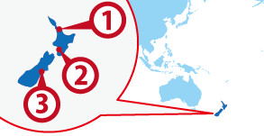

';
$header_obj->fncMenuHead_h1text = 'ニュージーランド | ワーホリで行ける国（ワーキングホリデー協定国）';
//add javascript for country info
$header_obj->add_js_files='
';
if ($header_obj->computer_use() === false && $_SESSION['pc'] != 'on') {
$header_obj->add_css_files='';
} else {
$header_obj->add_css_files='';
}
$header_obj->display_header();
include('../../calendar_module/mod_event_horizontal.php');
?>
';
$header_obj->fncMenuHead_h1text = 'ニュージーランド | ワーホリで行ける国（ワーキングホリデー協定国）';
//add javascript for country info
$header_obj->add_js_files='
';
if ($header_obj->computer_use() === false && $_SESSION['pc'] != 'on') {
$header_obj->add_css_files='';
} else {
$header_obj->add_css_files='';
}
$header_obj->display_header();
include('../../calendar_module/mod_event_horizontal.php');
?>

 Auckland
Auckland Wellington
Wellington Christchurch
Christchurch
ワーホリ協定国一覧へ戻る

ニュージーランド人気都市 BEST3
ニュージーランド基本情報
| 首都 | Wellington |
|---|---|
| 言語 | English |
| 面積 | 268,680 km²(世界73位) |
| 人口 | 4,693,000人(世界122位) |
| 通貨 | New Zealand Dollar (NZD) |
＊2018年1月時点の数値です
| 日本時間 | Auckland |
|---|---|
 1月1日 09:00am |
1月1日 13:00pm |
＊サマータイムの期間は時差が変動します
| 首都 | Auckland |
|---|---|
| 面積 | 268,680 km²(世界73位) |
| 人口 | 4,445,436人(世界122位) |
| 言語 | English |
|---|---|
| 通貨 | New Zealand Dollar (NZD) |
＊2014 年10 月時点の数値です |
|
日本との時差
| 日本時間 | Auckland |
|---|---|
|
1月1日 09:00am |
 1月1日 13:00pm |
＊サマータイムの期間は時差が変動します
ニュージーランドってどんな国？
映画ロードオブザリングやラストサムライの撮影場所に選ばれるなど太古の自然が多く残っており、最大の都市であるオークランドでもゆったりと生活することができます。そのため、ニュージーランドにワーキングホリデーで行けばどこでも日本とは全く違う生活を送ることができます。北島と南島で分かれており、北島は語学学校で勉強やシティジョブをしに、南島は観光やファームジョブをしに行く人が多いです。またニュージーランドはバンジージャンプ発祥の国です。スカイダイビングやパラグライダーも有名ですので、ニュージーランドに行くのならぜひ本場のアクティビティを体験してみてください。
ニュージーランドは北島と南島を合わせても日本よりも小さく、１カ月もかからずぐるっと1周出来るのでワーキングホリデー中に車で観光する人も多いです。ウィンタースポーツの街クィーンズタウンでは日本の夏に冬になるので夏休みに観光ビザでスキー・スノボに行く人も多いです。街を見下ろしながらのスキー・スノボは最高！同一雇用主で1年間働けるのも特徴ですが、仕事はオークランドに集中しているので少し注意が必要です。農場の仕事を3カ月すると、ワーキングホリデーを3カ月延長することも可能です。
▼▼▼まずは無料セミナーへ！ワーキングホリデー＆留学の無料セミナーはこちら！▼▼▼